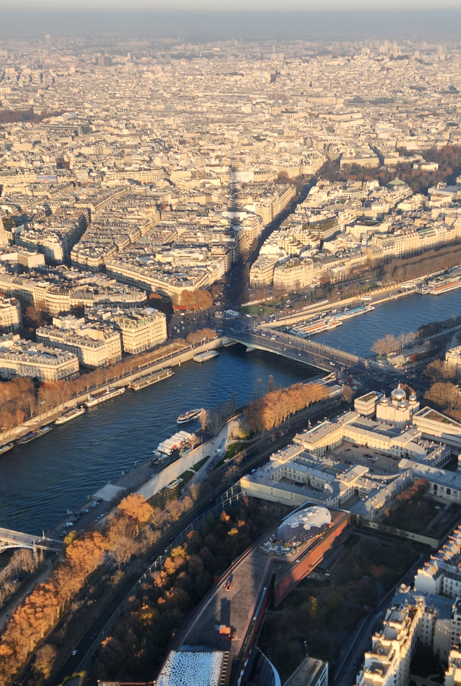

Париж, Франція

Коротка характеристика
Париж — столиця Франції, розташована на річці Сені. Це одне з найвідоміших міст світу, центр моди, мистецтва та гастрономії.
Чому я обрав це місто
Я обрав Париж за неповторну атмосферу: затишні кав'ярні, набережні Сени, музеї світового рівня й архітектуру, яка не змінюється століттями. Це місто, у яке хочеться повертатися.
Цікаві факти
- Ейфелеву вежу збудовано до Всесвітньої виставки 1889 року, її висота становить близько 330 метрів.
- Лувр вважається одним із найбільш відвідуваних музеїв світу.
- Сена ділить Париж на Правий і Лівий береги.
- У місті понад 20 адміністративних округів (арондисментів), що розташовані по спіралі.
Визначні місця
- Ейфелева вежа
- Лувр
- Собор Паризької Богоматері
- Монмартр і базиліка Сакре-Кер
- Тріумфальна арка
Моя оцінка
| Критерій | Оцінка |
|---|---|
| Атмосфера | 10 / 10 |
| Архітектура | 10 / 10 |
| Їжа | 10 / 10 |
| Транспорт | 8 / 10 |
| Ціни | 7 / 10 |
| Загальна оцінка | 9,5 / 10 |